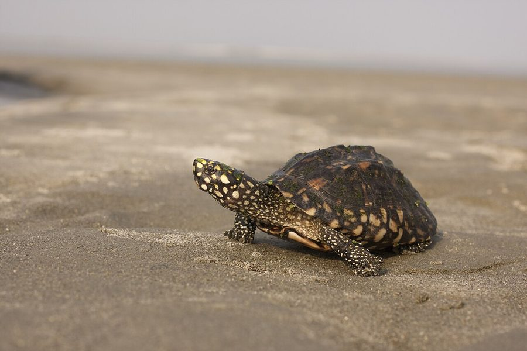

ब्लैक पॉन्ड कछुआBlack Pond Turtle
Geoclemys hamiltonii · Geoemydidae · REP-0040

- Scientific name वैज्ञानिक नाम
- Geoclemys hamiltonii (Gray, 1830)
- Family कुल
- Geoemydidae
- Hindi हिंदी
- ब्लैक पॉन्ड कछुआ
- Local names स्थानीय नाम
- black pond turtle, turtle
- Status here यहाँ की स्थिति
- native
- Movement आवागमन
- Resident, here all year
- Known from कहाँ दर्ज
- Others have published records from the Basti–Ayodhya districts बस्ती–अयोध्या के ज़िलों से दूसरों के प्रकाशित अभिलेख
- IUCN IUCN
- EN
- Review समीक्षा
- audited and independently read
When to look कब देखें
Present all year. साल भर मौजूद।
Tell it apart from इनसे अलग पहचानें
ब्लैक पॉन्ड कछुआ / Black Pond Turtle
Geoclemys hamiltonii (Gray, 1830) — Geoemydidae
ब्लैक पॉन्ड कछुआ — पूर्वी भारत के तालाबों, नहरों और धान के खेतों में रहने वाला भारत का सबसे छोटा ताज़े पानी का कछुआ। इसका खोल काले रंग का होता है और शरीर पर पीले या नारंगी रंग के धब्बे (spots) होते हैं, जिससे इसे "Spotted Pond Turtle" भी कहते हैं। यह बहुत ही शर्मीला और छिपा हुआ रहने वाला कछुआ है, जो पानी के गहरे हिस्सों में छिप जाता है। पानी की घास, कीड़ों और छोटी मछलियों को खाता है। आजकल यह कछुआ बहुत दुर्लभ हो गया है।
Quick Identification त्वरित पहचान
| Feature | Description |
|---|---|
| Size | India's smallest freshwater turtle; carapace 10–15 cm long |
| Carapace | Small, compact; moderately domed; dark brown to black |
| Markings | Yellow or orange spots, streaks, or rays on carapace and head |
| Plastron | Yellow or pale, often with dark spots at edges |
| Head | Small; eyes positioned laterally; snout blunt |
| Limbs | Short and stubby; webbed feet |
| Behaviour | Aquatic and secretive; rarely basks; very shy |
Field tip: India's smallest freshwater turtle, with a dark shell and yellow spotting. Stays hidden in water most of the time; rarely basks. Found in ponds, marshes, and rice paddies. Extremely rare and endangered; any sighting should be documented and reported.
Morphology आकारिकी
Biometrics (typical measurements):
| Measurement | Range |
|---|---|
| Carapace length | 100–150 mm |
| Carapace width | 80–120 mm |
| Plastron length | 95–140 mm |
| Weight | 100–300 g |
Carapace: Compact and moderately domed. Dark brown to black in coloration. The surface is covered with yellow, cream, or orange spots, streaks, or radiating lines on the scutes, particularly on the marginal scutes. Growth rings are distinct. The carapace is relatively smooth, lacking pronounced keels.
Plastron: Yellow, cream, or pale, often with dark spots at the edges of scutes or along the central seam. The plastron-carapace junction has a distinct hinge, allowing partial closure of the shell for protection.
Head and neck: Small head with a moderately pointed snout. Eyes are laterally positioned. Neck is short but retractable. Yellow or orange coloration on the head and neck.
Limbs: Short and stocky. Front limbs have four to five claws; hind limbs have four claws. Webbing is moderate; feet are not as extensively webbed as larger aquatic turtles.
Sexual dimorphism: Males are smaller than females and have longer tails, more concave plastrons, and larger preanal pores.
Behaviour & Ecology व्यवहार और पारिस्थितिकी
Aquatic and secretive. The Black Pond Turtle spends most of its time in water and is very shy and retiring.
- Habitat preference: Inhabits permanent and semi-permanent ponds, marshes, shallow lakes, and slow-moving streams with abundant aquatic vegetation. Prefers shallow water with soft muddy bottoms.
- Aquatic activity: Slower swimmer than larger aquatic turtles. Spends much of the time on the bottom searching for food or hiding in vegetation.
- Basking: Rarely basks on land or above water. Occasionally comes to the surface but quickly retreats. May thermoregulate in shallow water.
- Feeding: Omnivorous forager, feeding on aquatic vegetation (algae, pondweeds), small fish, tadpoles, aquatic insects, and snails. Very active feeder in early morning and late afternoon.
- Defensive behaviour: Extremely secretive and wary. When disturbed, hides in vegetation or retreats to deeper water. Withdraws into shell for protection.
- Seasonal activity: Reduced activity during winter; may become dormant in sediment during very cold months.
Life Cycle / Phenology जीवन चक्र
| Season | Event |
|---|---|
| March–April | Emergence from winter dormancy; feeding increases |
| May–June | Pre-nesting season; females move to suitable nesting areas |
| June–August | Nesting period; females lay 2–4 small elongated eggs |
| August–October | Hatchlings emerge (small, 25–30 mm carapace) |
| October–March | Dormant period; shelter in mud and vegetation |
Host Plants or Prey आहार
Omnivorous diet:
- Plant material: Algae, aquatic vegetation, pondweeds, submerged plant shoots
- Animal prey: Small fish, fish eggs, tadpoles, aquatic insects, snails, small crustaceans
- Feeding method: Forages slowly on bottom and in vegetation; crushes shells with small but powerful jaws
Predators / Natural Enemies शत्रु
- Predatory birds: Small herons, kingfishers, and waders hunt this small turtle
- Snakes: Water snakes readily consume eggs and small juveniles
- Mammals: Mongooses, otters, and water-dwelling mammals
- Fish: Large fish species may consume hatchlings
- Humans: Historically collected for the pet trade; over-collection is likely a major cause of decline
Agricultural / Human Relevance कृषि प्रासंगिकता
Ecosystem role and conservation concern. The Black Pond Turtle plays a role in freshwater pond ecosystems as an omnivorous forager. However, the species is now Endangered due to habitat loss, water pollution, and over-collection for the pet trade. It is protected under the Wildlife (Protection) Act 1972. Its presence is a strong indicator of pristine pond ecosystem health. Any individuals found should be protected and their location documented for conservation purposes.
Expected Locally स्थानीय रूप से अपेक्षित
Not a field record. Written from published accounts for eastern Uttar Pradesh. No confirmed local sighting yet — if you have seen it, that is what the atlas needs.
अभी तक स्थानीय पुष्टि नहीं। यह विवरण प्रकाशित स्रोतों से है, किसी अवलोकन से नहीं।
This species is NOT a field record. The distribution below is based on published sources describing where Black Pond Turtles should be looked for in the Basti–Ayodhya region and where they have been recorded by herpetologists.
यह प्रजाति स्थानीय अवलोकन नहीं है। यह विवरण प्रकाशित स्रोतों से है।
Expected in permanent and semi-permanent ponds, marshes, and wetlands of eastern Uttar Pradesh, particularly in areas with relatively pristine aquatic vegetation and low pollution. GBIF holds published records from the core districts. The species is now extremely rare and localized; status in Basti–Ayodhya is highly uncertain. Search in shallow, vegetated ponds during monsoon months. The first local record would be a clear photograph showing the distinctive dark carapace with yellow spotting, with place, GPS coordinates, date, and exact location details submitted to conservation authorities.
Conservation Status संरक्षण स्थिति
Critically threatened. Geoclemys hamiltonii is listed as Endangered on the IUCN Red List. The primary threat is collection for the international pet trade, which has decimated wild populations in many parts of the species' range. Habitat loss due to wetland drainage and water pollution are secondary threats. Protected populations exist in a few wetland reserves in eastern India, but the species is essentially extirpated from most of its former range. Any wild populations discovered should be immediately protected and managed as conservation areas.
Distribution वितरण
Global range: Endemic to India; historically occurred widely in the Indo-Gangetic plains and eastern India.
In India: Historically distributed across the Gangetic plains and eastern India; now highly fragmented with small populations remaining.
In Uttar Pradesh: Historically widespread; now found only in scattered locations in eastern UP; status highly uncertain.
In Basti district / eastern UP: Very rare, and its present status here is unknown. Any confirmed sighting would be of major conservation importance.
Research Questions शोध प्रश्न
- Does any viable population of Geoclemys hamiltonii still exist in eastern Uttar Pradesh, and if so, where? / क्या इस कछुए की कोई जंगली आबादी अभी भी पूर्वी उत्तर प्रदेश में बची है?
- What is the demographic status and reproductive success of remaining populations?
- What specific factors have driven the population decline, and can they be reversed in protected areas?
- क्या पानी की गुणवत्ता, तालाबों के क्षेत्रफल में कमी, या संग्रह व्यापार इसके विलुप्त होने का मुख्य कारण है?
- Can captive breeding programs and reintroduction efforts restore populations in suitable protected wetland areas?
- Can awareness campaigns and strict enforcement of collection bans help prevent illegal trade and protect remaining wild populations?
Similar Species मिलती-जुलती प्रजातियाँ
| Species | Key Difference | हिंदी | Field Rule | |
|---|---|---|---|---|
| [[indian_tent_turtle\ | Indian Tent Turtle]] (Pangshura tentoria) | Much larger (15–22 cm carapace); lacks yellow spotting; has central ridge | पंडुक कछुआ | Tent Turtle is much larger; Black Pond is tiny with yellow spots. |
| [[brown_roofed_turtle\ | Brown Roofed Turtle]] (Pangshura smithii) | Larger (16–24 cm carapace); lacks yellow spotting; domed shell | छत वाला कछुआ | Brown Roofed is much larger; Black Pond is India's smallest turtle. |
| Lissemys punctata (Indian Flap-shell Turtle) | Soft shell; flap-like structures on plastron; different habitat preference | मुलायम कवच कछुआ | Flap-shell has soft, flexible shell; Black Pond has hard shell with yellow spots. |
Field rule: India's smallest turtle with a hard dark shell decorated with yellow or orange spots is a Black Pond Turtle. If it is larger or lacks spotting, it is a different species.
Taxonomy & Classification वर्गीकरण
Original description. The species was described by John Edward Gray in 1830 as Testudo hamiltonii based on Indian specimens, named after Alexander Hamilton, a naturalist. Type locality is India. It was later placed in the monotypic genus Geoclemys Gray, 1855.
Subspecies. Monotypic — no subspecies are currently recognised.
Family and order placement. Order Testudines, family Geoemydidae (Asian turtles). The genus Geoclemys contains only this single species.
Phylogenetic notes. Geoclemys hamiltonii is a basal lineage within Geoemydidae, representing a distinct ecological and morphological type adapted to small, shallow wetlands.
IUCN status rationale. Listed as Endangered (EN) by the IUCN Turtle Specialist Group. The species qualifies for EN status due to small and fragmented populations, continuing decline, and threats from over-collection. In India, it is protected under the Wildlife (Protection) Act 1972 (Schedule I — highest protection).
Photo Gallery फोटो गैलरी
No photos yet — add field photos to media/species/black_pond_turtle/ and run node scripts/sync_photos.js.
Wanted photos:
- Dorsal view showing yellow spotting on black shell
- Ventral view of plastron
- Head detail showing orange markings
- Size comparison with hand or known object
- Habitat view of pristine pond
- Any additional documentation of wild sightings
References संदर्भ
- Gray, J. E. (1830). Annals of Philosophy, n.s., 10: 21.
- Smith, M. A. (1931). The Fauna of British India, Ceylon and Burma: Reptilia and Amphibia. Vol. 1 — Loricata and Testudines. Taylor & Francis, London.
- Das, I. & Bhupathy, S. (1998). Testudines and Crocodilia of India. World Wildlife Fund-India, New Delhi.
- Moll, D. & Moll, E. O. (2000). The Ecology, Exploitation and Conservation of River Turtles. Oxford University Press, Oxford.
- IUCN SSC Tortoise and Freshwater Turtle Specialist Group (2024). Geoclemys hamiltonii. IUCN Red List of Threatened Species. Status: Endangered.
- GBIF Occurrence Data — Geoclemys hamiltonii, India (2026). GBIF taxon key: [to be filled].
Source file: species/fauna/reptiles/black_pond_turtle.md